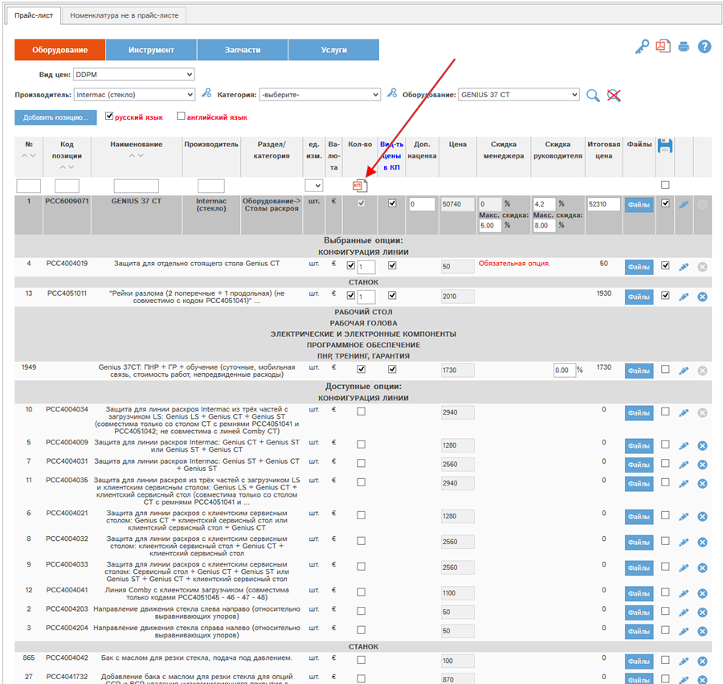
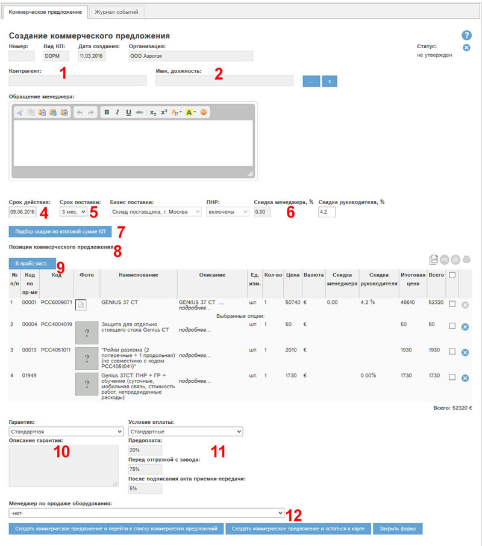
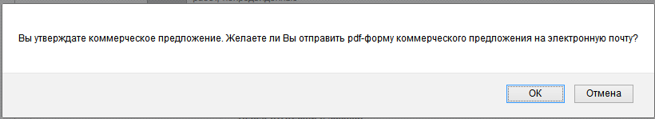
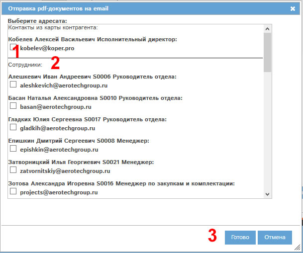

Создание КП при наличии у Вас
прав на данное действие производится с помощью кнопки  «Создать коммерческое предложение» в
прайс-листе.
«Создать коммерческое предложение» в
прайс-листе.
Для создания КП необходимо выбрать требуемое оборудование и опции к нему, указать при необходимости скидку:

Рис. Выбор оборудования и опций в прайс-листе для создания КП.
После заполнения всех полей необходимо нажать кнопку 
Откроется окно создания коммерческого предложения:

Рис. 6.2 Окно создания КП.
Рассмотрим поля и кнопки окна создания заявки.
Поле «Статус» у вновь
создаваемого КП имеет значение «не утверждено».
Щелкнув по кнопке  ,
Вы можете отменить создание КП.
,
Вы можете отменить создание КП.
В поля "Контрагент" (1) и "Имя, должность" (2) необходимо выбрать контрагента-покупателя по КП и его контакт из справочника контрагентов, нажав кнопку "...".
Поле "Обращение менеджера" (3) используется в pdf-версии КП и при отправке его на электронную почту контрагента.
В поле «Срок действия» (4) необходимо указать срок действия КП.
В поле "Срок поставки" (5) необходимо указать срок поставки данного КП. По умолчанию выбран срок 3 мес.
Поля "Базис поставки" и "ПНР" автоматически заполняются, исходя из выбранного вида цен прайс-листа и наличия среди опций в КП ПНР.
Поля "Скидка менеджера" и "Скидка руководителя" (6) аналогичны соответствующим полям в прайс-листе. Вы можете скорректировать скидку по КП в доступном вам поле.
Кнопка "Подбор скидки по итоговой сумме КП" (7) позволяет ввести новую итоговую сумму КП. Скидка при этом рассчитывается автоматически. Алгортим аналогичен работе в прайс-листе.
В блоке "Позиции коммерческого предложения" (8) вы видите оборудование и опции, включенные в КП. Доступно удаление опций (за исключением обязательных и связанных правилами опций). Для удаления опции из КП нажмите кнопку 
у опции.
Кнопка "В прайс-лист" (9) позволяет вернуться в прайс-лист для включения в это КП других опций, изменения их состава, количества.
В поле "Гарантия" (10) необходимо указать вид гарантии. Если выбран вид Индивидуальная, то необходимо указать описание гарантии в поле ниже.
В поле "Условия оплаты" (11) необходимо указать условия оплаты. По умолчанию указаны стандартные условия. При выборе нестандартных условий требуется заполнить поля Предоплата, Перед отгрузкой с завода, После подписания акта приемки-передачи.
В поле "Менеджер по продаже оборудования" (12) нужно выбрать из списка менеджера. При утверждении КП выбранный менеджер будет внесен в поле "Ответственный менеджер", и КП будет закреплено за этим менеджером.
Для сохранения КП:
- Нажмите кнопку "Создать коммерчекое предложение и перейти к списку коммерческих предложений" - КП будет сохранено, утверждено и произойдет переход в реестр КП
- Либо - нажмите кнопку "Создать коммерчекое предложение и остаться в карте" - КП будет сохранено, утверждено и программа останется в карте КП.
Внимание!
В ряде случаев и при отсутствии специальных прав (скидка выше максимальной доступной, выбраны нестандартные сроки КП, нестандартная гарантия или оплата) КП утвердить невозможно. В этом случае КП будет автоматически сохранено без утверждения. Программа выдаст сообщение об этом. Лица, имеющие право на утверждение такого КП, будут перечислены в этом сообщении.
Заполним требуемые поля и нажмем "Создать коммерчекое предложение и остаться в карте".
Программа предложит отправить pdf-версию КП на электронную почту:

При нажатии Отмена - КП будет сохранено, утверждено, но не будет отправлено на электронную почту. Используйте этот вариант, если не требуется отправлять КП сразу после утверждения. Это можно будет сделать позже.
Для отправки на электронную почту - нажмите ОК:

Доступны для выбора адреса контакта контрагента, указанного в КП, и адреса сотрудников. Выберите один или несколько адресов. Нажмите Готово.
КП будет сохранено.